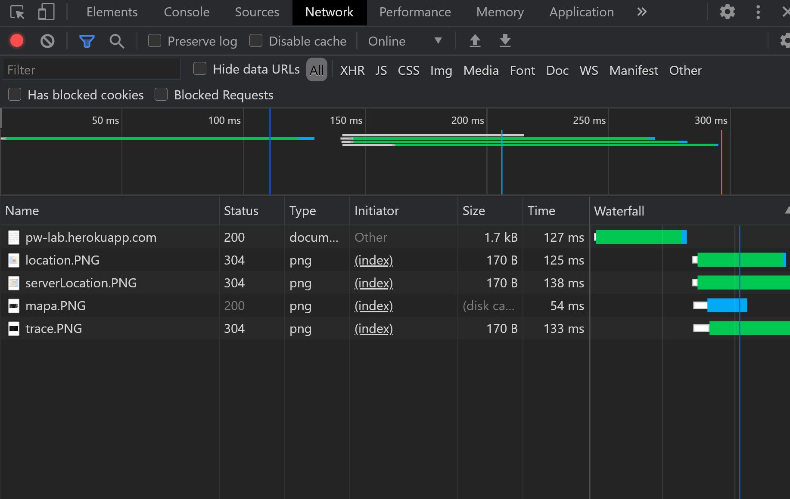
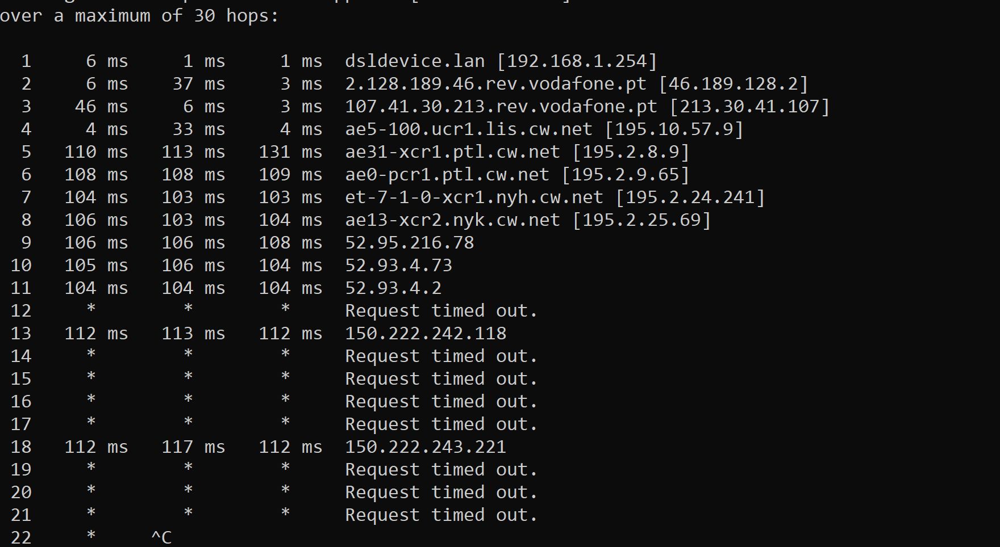

Neste trabalho foi apresentado uma elaboracao de uma pagina web introdutoria a disciplina onde foi possivel criar um website usando html e publicar o mesmo na plataforma Heroku


sao descarregados os ficheiros que cada pagina web "consume" ou seja os recurso que usa para funcionar e neste caso vai usar
| Elemento | funcao |
|---|---|
| Preview | representa os dados do ficheiro (Codigo ou imagem) dependendo do seu tipo |
| Headers | representa o estado de cada ficheiro bem como os pedidos GET/POST que sao feitos |
| Timing | mostra o trafico produzido pelo ficheiro |
visualizacao do network
O comando tracert funciona tanto para dns ou para um ip e mostra o percurso dos pacotes desde o nosso ip ate a origem que definimos no comando. Alem disso, mostra o tempo que demora a chegar e se visualiza-mos em modo de grafos podemos calcular o peso total da sua viagem, ou seja, quando tempo demorou aproxidamente
Geo Traceroute ... Visualizar